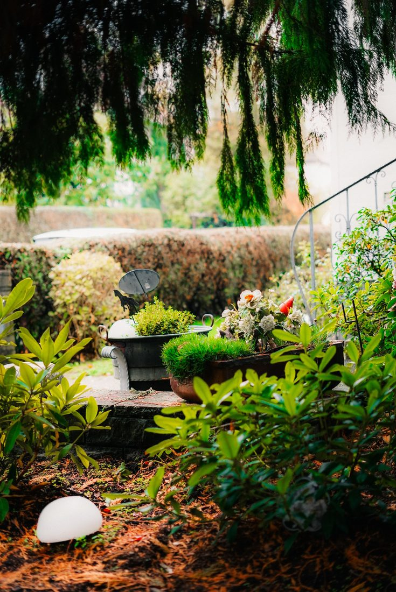
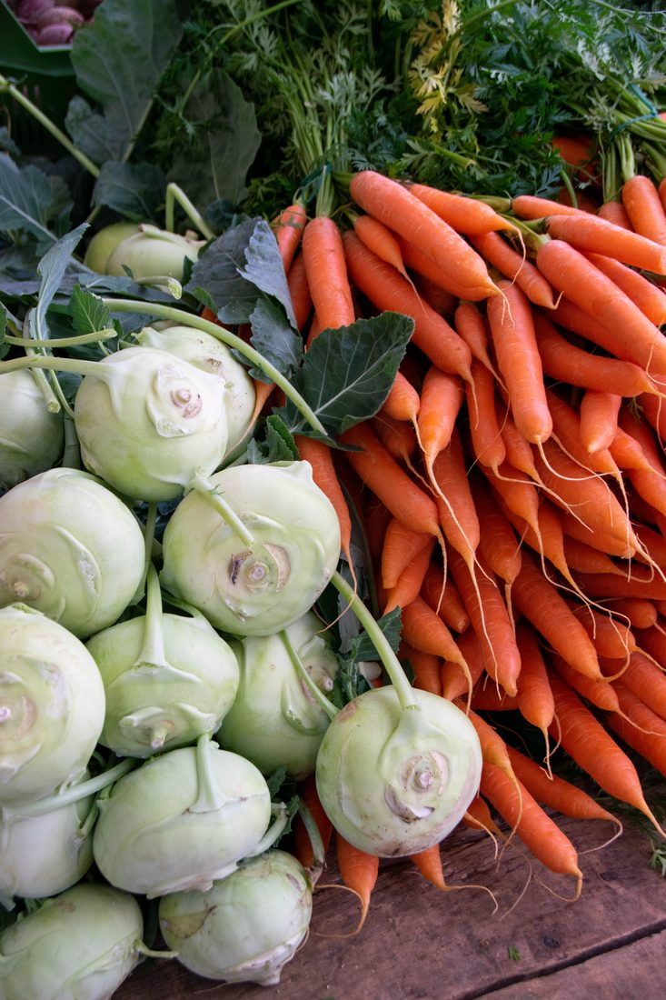
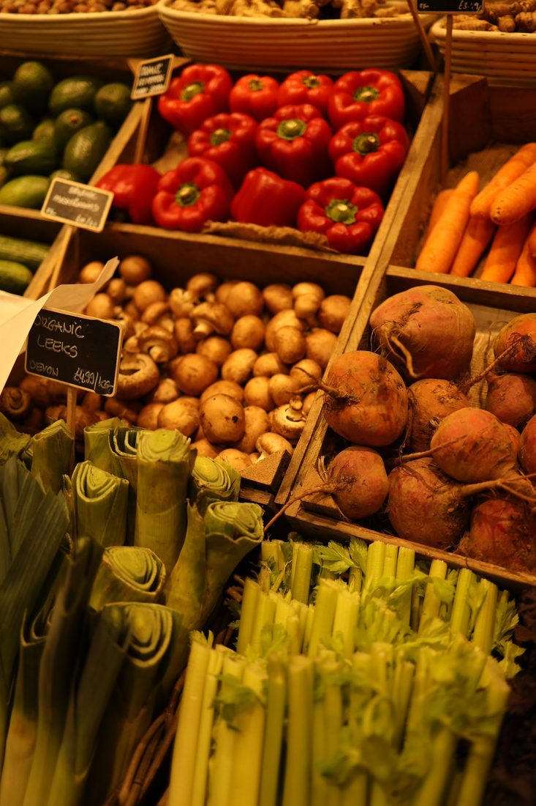
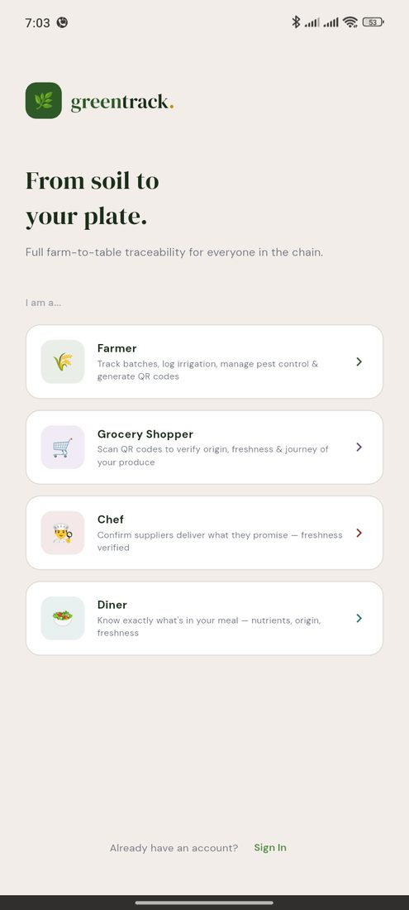

A farmer, a shopper, a chef, and a diner — each one scans the same tag, and each one gets exactly what they need from it.

Mwangi is a farmer who uses the GreenTrack app to track the progress of the crops in his garden. Whenever he plants a crop, he creates a new crop batch, inputs the crop name, selects his farming method, and uses his phone's GPS to pin-drop the exact location of the plot — all on the app.
To grow nutrient-rich vegetables, he manages a strict watering schedule. With a single tap he logs the irrigation — the water source, the time he watered — and the app works out the right timing and amount for the next round on its own.
Weather is no longer folklore either. Instead of leaning on farming patterns passed down through generations, GreenTrack tells him when the long and short rains are coming, and exactly how much water his crops will need through them. If pests show up, he photographs the affected leaves and the app's pest-diagnosis module matches the symptoms to the pest, the right pesticide, and how to apply it.
When harvest time nears, the app enforces a Pre-Harvest Interval tied to whatever pesticide was last used, and locks the harvest function until the countdown clears — guaranteeing any spray residue has fully broken down. A day or two out, Mwangi logs an estimated yield so partnered buyers know a fresh batch is coming, cutting down on food waste. When he finally taps "Log Harvest," the app captures the date, time, and ambient weather, aggregates every log from planting onward, and — once he enters the final verified weight — auto-generates a unique QR code. He prints it straight onto the delivery crates and moves on to planting the next batch.

Meet Faith, a busy shopper who cares deeply about organic, fresh food — but is skeptical about supermarket labels, and wants to know exactly where her vegetables came from.
Faith stands in the grocery aisle looking at a package labelled "fresh," with no way to verify whether it was harvested yesterday nearby, or spent days travelling on a truck. She pulls out her phone, opens the GreenTrack app, and scans the QR code on the packaging. Instantly, she sees the exact farm it was harvested from and the journey those vegetables followed to reach the shelf in front of her.
She adds them to her cart with confidence.

Sarah is a chef at a restaurant well known for its "green bowl." She's just received a crate of vegetables from a supplier and wants to be sure they're fresh and locally sourced. With GreenTrack, she doesn't have to take the supplier's word for it — and risk serving dull, day-old produce that's lost its nutritional value in transit.
Instead, she scans the QR code on the crate and instantly confirms the greens were harvested by Mwangi just hours ago, along with their organic certification. Confident in their freshness and nutrient retention, she builds her signature green bowl for the lunch rush — proud to know exactly what's entering her kitchen.

Mary, a fitness-minded diner, sits at Sarah's restaurant looking at the menu. It reads "Nutrient-rich organic green bowl" — but she's skeptical. Restaurant meals are notoriously hard to track accurately; she has no way to know the real nutritional density, or whether the ingredients are fresh enough to have retained their vitamins.
When her meal arrives, she notices a small GreenTrack QR code printed next to the menu and scans it with her phone. Instantly, her screen fills with a full breakdown of the meal's exact vitamin and caloric content, verified against its fresh transit timeline.
She logs the nutrients straight into her fitness tracker, and enjoys a meal she completely trusts.
One crate. One tag. Four completely different questions, all answered by the same scan.
Get the app → Download these stories →